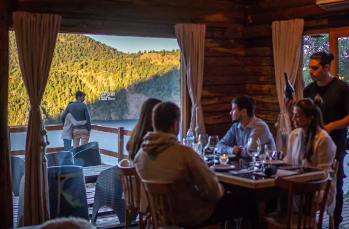
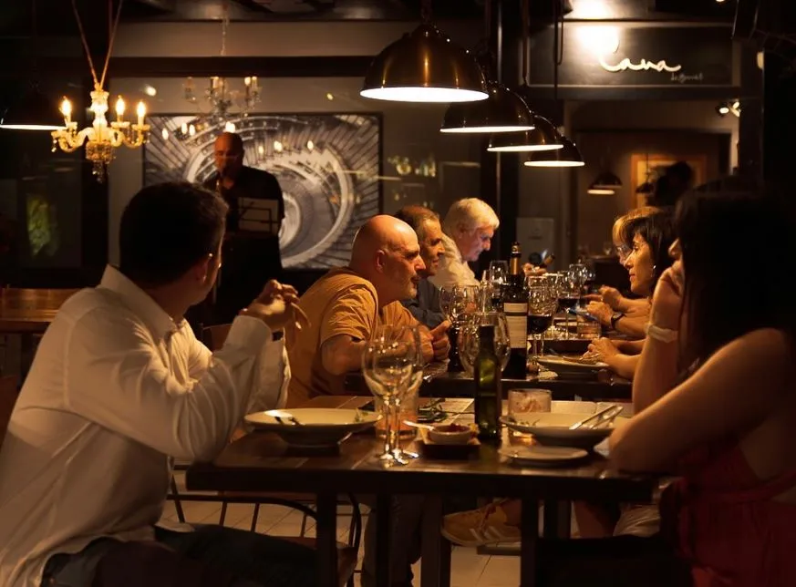
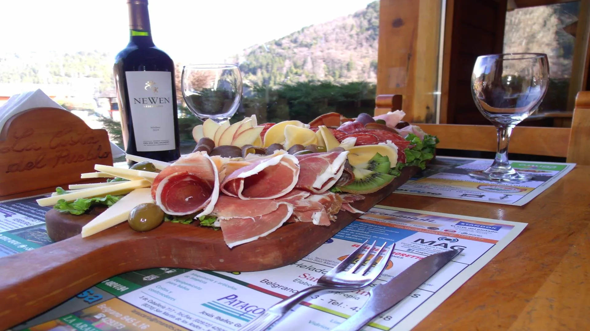
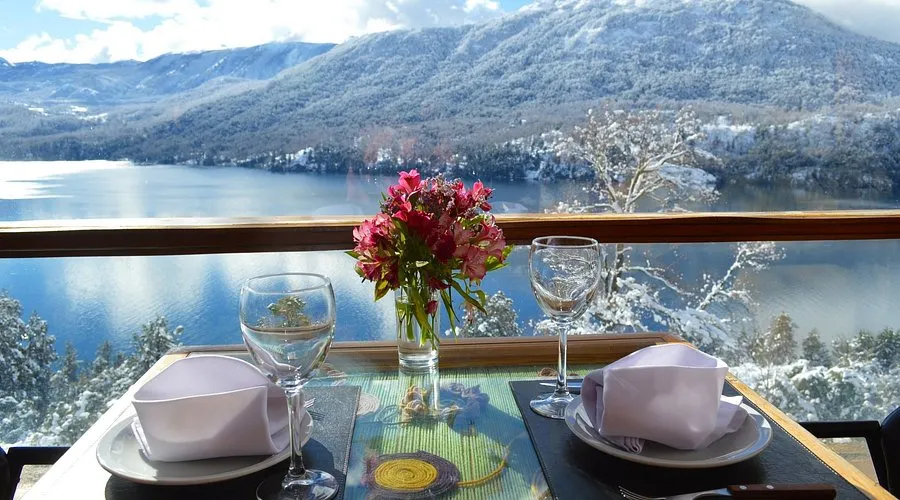
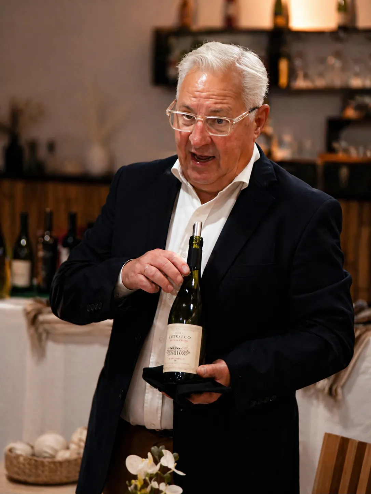
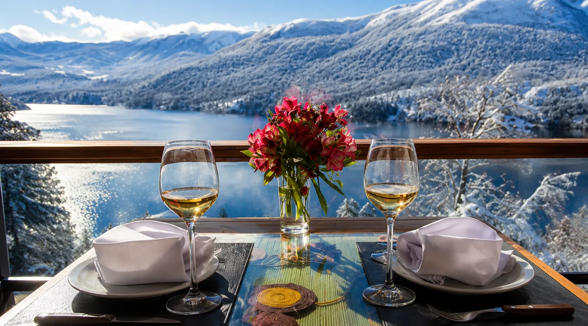

Experiencias de vino en Patagonia con Sergio Landoni
Sergio Landoni · Sommelier de Territorio · Embajador del Vino Neuquino
El vino es territorio. Paisaje, clima, gastronomía y personas.
Desde San Martín de los Andes, trabajo el vino desde su lugar de origen, interpretando lo que sucede en cada región y llevándolo a una experiencia concreta.
Esta página reúne las formas en las que ese trabajo se transforma en experiencias, asesorías, comunicación y proyectos vinculados al vino patagónico.

Experiencias diseñadas desde el territorio
Propuestas para grupos reducidos donde el vino neuquino y patagónico se integra con el paisaje, la gastronomía y el ritmo del lugar.
Cada experiencia se construye a medida, con un eje claro: entender el vino en su contexto.
- Selección curada de vinos patagónicos.
- Encuentros en espacios naturales o gastronómicos.
- Integración con cocina regional.
- Relato cercano, contextual y conectado con el lugar.
- Acompañamiento personalizado durante la experiencia.
Pensadas para quienes buscan vivir el vino en Patagonia, no solo degustarlo.
Vino y gastronomía
El vino encuentra su sentido cuando se integra con la cocina y el territorio.
En Patagonia, una copa no se entiende aislada. Se vuelve más clara cuando aparece junto a una mesa, un producto regional, una conversación y un paisaje que le dan marco.
Por eso, las experiencias se piensan desde la coherencia entre vino, gastronomía y momento. No como una puesta en escena, sino como una forma natural de contar el lugar.



Asesoría y consultoría en vino
Acompaño a bodegas, proyectos gastronómicos e iniciativas vinculadas al vino desde una mirada territorial.
El foco no está en el producto aislado, sino en cómo ese vino se integra, se comunica y se vive en su contexto real.
- Curaduría de cartas de vino con enfoque regional.
- Integración del vino en propuestas gastronómicas.
- Desarrollo de experiencias enoturísticas.
- Comunicación y posicionamiento territorial.
- Acompañamiento a proyectos vitivinícolas.
- Diseño conceptual de propuestas vinculadas al vino y al turismo.
Trabajo desde el conocimiento directo del territorio, los productores, los espacios gastronómicos y el público que llega a Patagonia buscando algo más que una copa.
Comunicación, prensa y proyectos institucionales
El vino también se construye desde cómo se comunica.
Participo en proyectos de comunicación, prensa y desarrollo institucional vinculados al vino patagónico, con foco en identidad, territorio y valor cultural.
Contenidos y medios
Columnas, artículos, contenidos especializados y participación en medios vinculados al vino, la gastronomía y la identidad patagónica.
Charlas y presentaciones
Presentaciones, degustaciones guiadas y encuentros donde el vino se cuenta desde el lugar, con claridad y cercanía.
Eventos y territorio
Desarrollo conceptual para ferias, experiencias, acciones institucionales y proyectos que vinculan vino, turismo y gastronomía.
Como Embajador del Vino Neuquino, distinción otorgada por el Gobierno de la Provincia del Neuquén, acompaño una línea de trabajo orientada a posicionar el vino de la provincia desde su identidad, su gastronomía y su vínculo con el turismo.

Una forma distinta de acercarse al vino
El vino se entiende mejor cuando se lo sitúa.
El consumidor actual no llega solamente por la técnica ni por el discurso tradicional. Llega por la experiencia, por el contexto, por una recomendación, por una mesa compartida o por lo que sucede alrededor de una copa.
Contexto
El vino se comprende mejor cuando se relaciona con el lugar donde nace.
Experiencia
La copa se vuelve memorable cuando forma parte de una vivencia real.
Territorio
Productores, cocina, paisaje y cultura construyen el sentido del vino.
Cuando el vino está en su lugar, todo se ordena.
Conversemos sobre vino, territorio y Patagonia
Si estás desarrollando un proyecto, pensando una experiencia o buscando integrar el vino patagónico desde una mirada territorial, podemos conversarlo.
Trabajo con bodegas, espacios gastronómicos, hoteles, proyectos turísticos, medios, instituciones y propuestas privadas vinculadas al vino neuquino y patagónico.
Desde San Martín de los Andes, conectando vino, gastronomía, paisaje y cultura con una mirada estratégica y real.